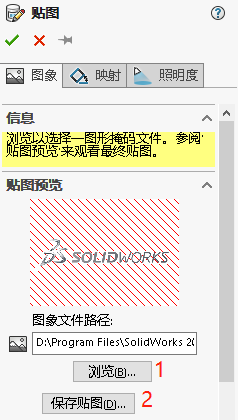
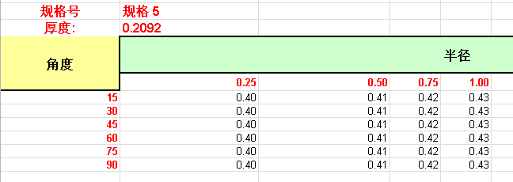
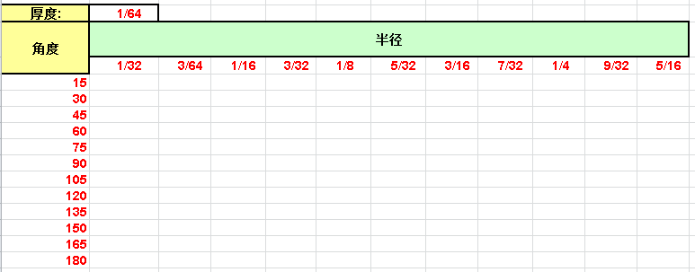
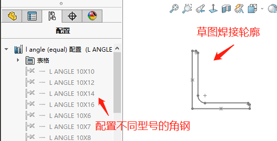
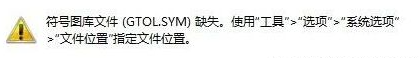
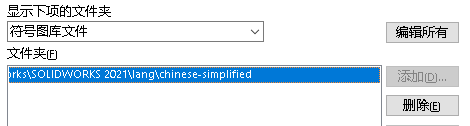
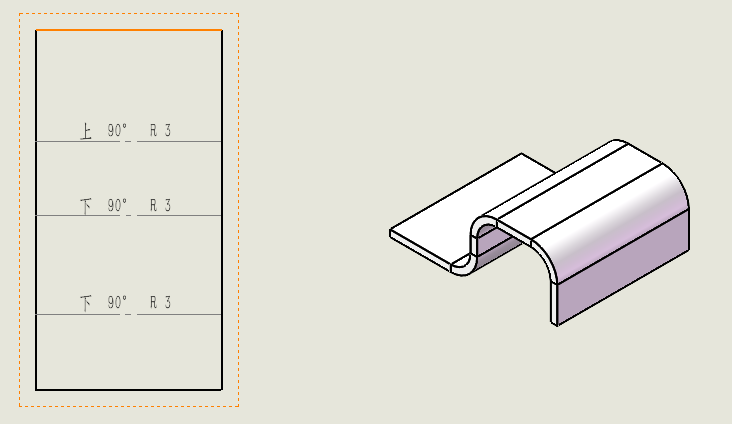
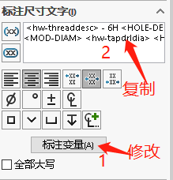
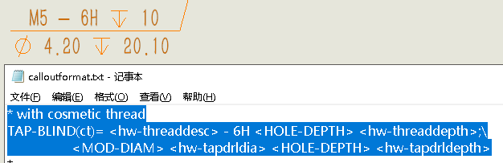
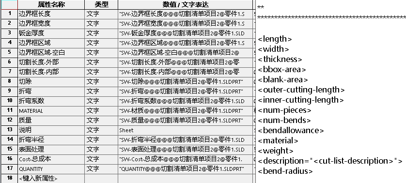

SOLIDWORKS lang 文件夹包含多个 SW 的定制文件，可对 SW 软件的部分样式进行定制：
定制文件位置：..\SOLIDWORKS\lang\chinese-simplified\
外观调色盘
.sldclr 文件可修改外观颜色调色盘,默认是 greys（灰度等级）；pastels（蜡笔）；standard（标准）三种。外观颜色调色盘采用的是 RGB 调色，具体颜色 RGB 值请可借助网上在线工具获得。
外观&布景
SW 的外观&布景类型有：1、贴图；外观；布局；纹理；分析布景。定制文件内容一般为【图像文件】+【.P2X】的形式。下面仅介绍贴图定制的方法，其他类型定制方法类同。
贴图定制：
随便打开个模型，使用贴图库随意放置一种贴图。在贴图属性框内就可以浏览自己制作好的贴图。保存贴图后会生成一份.P2D 文件。将原图和.P2D 文件放置设计库可以读到的位置即可。
【图像文件】默认位置：..\SOLIDWORKS\data\Images
【P2X 文件】默认位置：..\SOLIDWORKS\data\graphics
钣金规格表
Sheet Metal Gauge Tables 文件夹内的 Excel 文件记录了钣金规格表，建议是复制原有 Excel 文件按已有格式进行修改。
位置：SOLIDWORKS\lang\chinese-simplified\Sheet Metal Gauge Tables）
折弯系数表
Sheetmetal Bend Tables 文件夹内的 Excel 文件记录了折弯系数表，建议是复制原有 Excel 文件按已有格式进行修改。
位置：SOLIDWORKS\lang\chinese-simplified\Sheetmetal Bend Tables）
焊件轮廓
焊件轮廓的本质其实就是草图轮廓的再利用，要求我们自定义草图轮廓，并保存在如下默认位置即可。（默认位置：..\SOLIDWORKS\lang\chinese-simplified\weldment profiles）

表格
表格定制主要归纳为两类：“表格布局”和“内容链接”。表格布局：可以右键空白表格，添加左（右）列，上（下）行。内容链接：参考SOLIDWORKS 工程图技巧 - 注解属性
- 总表.sldtbt
- 孔表.sldholtbt
- 材料明细表.sldbomtbt
- 修订表.sldrevtbt
- 焊件切割清单.sldwldtbt
- 焊接表.sldwldtbt
- 折弯系数表
- 冲孔表.sldpuntbt
- 总公差表
符号图库
gtol97.sym 文件定义了在 SolidWorks 中应用的各种符号样式，如表面粗糙度符号、形位公差符号、焊接符号及其它常用的各种图形符号。用户可自行编辑该文件。当文件出错时（或丢失），SW 里的符号会出现乱码或无显示情况，并有报错弹窗。这时需要在【系统选项】-【文件位置】-符号图库文件重新定义文件位置。


折弯线注释
钣金折弯线注释文件 bendnoteformat.txt 修改工程图在外边的折弯注释
<bend-direction>

孔标注定制
异型孔向导标注格式定义文件 calloutformat.txt 修改工程图【孔标注】的内容。txt 文件内编辑内容：
1、具体属性值对应代码可看 txt 文档最底下说明。
2、或是可以在工程图孔标注好再复制回 txt 文档。


钣金切割属性
钣金切割列表属性说明格式定义文件 clpnoteformat.txt 剪切列表属性的默认格式

工程图比例
drawingscales.txt 修改工程图默认的视图比例
剖面线
Sldwks.ptn 定义了工程图的剖面线效果，剖面样式文件可在链接网站获得。把*后内容复制到该文件后即可使用。（详见.ptn 说明）